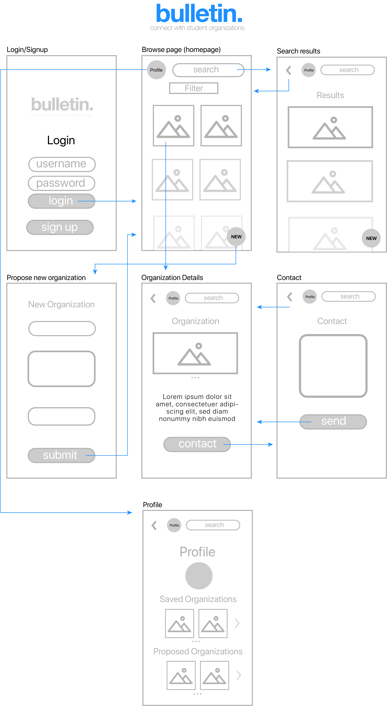

Google UX Design Challenge
by Kyle Faucher
by Kyle Faucher
1: Design an experience for new students to browse, search, and propose new student organizations. Provide your overall process, a wireframe flow, and one to two screens at higher fidelity.
I decided it was necessary to do at least a small amount of research in order to guide my designing process, as I don't want to assume all users of this app would have the same preferences and experiences as me.
I decided to do a small number of one-on-one interviews with the following goals in mind: to guage the priorities of users when using this app, to understand what information the users would need from such an app, and to identify ways users usually access information about student organizations. The users I interviewed were all students at my University, since I decided these would be the intended users for such an app.
Specifically the interview questions I asked were:
1. How would you normally go about finding student organizations you’d like to join? Do you find this process easy or difficult/why?
2. If you were seeking information about student organizations, what specific information would you look for (ie. meeting dates, number of members, description, etc.)?
3. In using an app centered around student organizations, do you expect that you would use a "search," "browse," or "propose new organization" feature most frequently?
During the interviews, I learned that the users expect that they would use the browse feature the most. I also found that users would expect some sort of social feature, allowing them to get in touch with organizations. As far as important information users would like to be able to access, the most notable were organization descriptions, meeting dates, time commitments, and contact information. The users usually used in-person methods for finding student organizations, such as fairs or billboards on campus.
From my research, I identified the main problems I would like to address while designing the app. These include:
I began by quickly brainstorming some of the problems my design should consider and ways to solve them. I also came up with a few basic sketches of possible overall layouts for the app.

I settled on creating a virtual "bulletin board" similar to those used on college campuses to post information about clubs and events.
I created a user flow to help me understand how users will be interacting with this app and how it will be navigated. Since users said they would use the browse feature the most, I decided to make this the default home screen. From this page users will be able to reach any of the other features.

I included features for contacting organizations from the detailed page (when a user clicks on an organization from the main "browse" page) for the desired social aspect. From the browse page, users will can filter the organizations (by category, time commitment, size, etc.). This is to aid users in finding organizations suited to them specifically.
I created an app "Bulletin" that allows users to easily view, propose, and search for student organizations.
Once logged in (an account is used so that users can save organizations and contact them, and also to verify which school the user goes to), users are presented with a "browse" screen that imitates a bulletin board. Small pictures and names represent each organization on this page. The small pictures allow users to quickly look through different organizations since each organization doesn't take up the entire screen.
If desired, users can click these organizations to obtain further detail. This detail is not included on the browse screen, as to make it less cluttered and easier to look through. From the browse screen, users can narror the results using filters, or search for organizations via the search bar.
Back buttons are implemented throughout the app for natural navigation, and users can access their profile from most screens, where they can view their proposed organizations/status (pending, approved), and view their saved organizations.
The contact feature was important to those I interviewed, so users will be able to send messages through the app and receive e-mail responsed from organizations.

I included two high fidelity screens: the "browse" page and the "details" page. I chose a simple color scheme to make the app feel minimal and modern. By clicking one of the organizations on the "browse" page (the "Coding Club" in this prototype), users can see more details about the club and contact the organization.
There is a filter button that is included next to the search bar, but only when the "browse" or "search results" pages are up can it be clicked (since these are the only cases it makes sense to use the button). On the details page, users can save the organization for later simply by clicking the recognizable "bookmark" button.
Overall, the simple design of the app allows users to easily find, search for, and propose new organizations, while keeping in mind the priorities and needs of the targeted users.